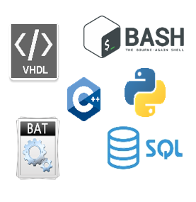

Agathe DALMAZIR
Mechatronics and software engineer
Stuttgart, Germany
dalmagathe@gmail.com
+33 (0)662981097
Languages
Intermediate
 Mother tongue
Mother tongue
 Beginner
Beginner
Skills

Methods

Programmation


"After 3 years of apprenticeship in a mechanical, hydraulic and electrical field I discovered more deeply during my VIE the software and programming part. Now I’m looking for a position in an international environment to improve my technical skills in programming. If you are looking for someone who wants to learn and not rest on his laurels, please contact me !"
Professional experiences
| Mechatronics / Software engineer (VIE) | Nov 2020 - Present |
| Technology and Strategy, Stuttgart, Germany | |
| Mechatronics On autonomous mobile robots |
▪ Sizing motorisation, ▪ Creation of a CAD model (Solidworks), ▪ Creation of mechanical parts with 3D printer for an active steering. |
| Software On an AI labelling software |
▪ Implementing new graphics features for the user (Python), ▪ Improvement of the UI/UX (Qt), ▪ Development of a software tool to facilitate the data labelling process (Python), ▪ DevOps : Ensure cross-platform use of the software, ▪ Redaction of the research tax credit paper. |
| Methods, maintenance, and new works unit (apprenticeship) | Sept 2017 – Sept 2020 |
| Foure Lagadec (nuclear field), France | |
| Methods unit |
▪ Research of the cause of breakdowns thanks to the maintenance data,
drawings, wiring diagrams, hydraulic schematics, functional analyzes,
etc ... ▪ Propose improvements on the production devices to avoid breakdowns, ▪ Writing feedbacks regarding the problems encountered during maintenance operations from a technical, safety, security and working conditions point of view, ▪ Writing health care systems in order to detect ageing, obsolescence and early signs of equipment malfunction and to programme maintenance, renovation and replacement actions accordingly. |
| New works unit |
▪ Drafting commercial and technical offers in response to calls for tenders on multidisciplinary projects (mechanics, electrical, hydraulics, and programmable industrial controllers), ▪ Research of the feasibility and the necessary technologies on projects (multidisciplinary sizing), ▪ Sizing mechanical parts, motorization group, hydraulic cylinders, hydraulic systems, ▪ Creation of electrical control boxes, ▪ Modification of a PLC program: Ladder language, ▪ Creation of mechanical drawings (2D, 3D), wiring diagrams and hydraulic schematics, ▪ Contact with suppliers for the adaptation and purchase of equipment, ▪ Management and installation of projects on site with technicians and project manager. |
Professional experiences |
|
| Vokabellernen | On going |
| Application with Qt and C++ connected to a PhpMyAdmin database to record and translate words in English/French/German. The application randomly chooses a word in English/French or German, the user translates it and thus learns it. You can also choose to guess the article (das/der/die) or the plural form of a noun | Engineering school projects |
| Design of a mobile robot prototype for the investigation of nuclear areas | |
| Project for the CEA (French Alternative Energies and Atomic Energy Commission). The innovation on this robot was to be able to change the size of the mobile base during use. To do this, we integrated an electrical cylinder on the base. There are also two caterpillars, one on the left and one on the right, and “flippers” at the front for climbing stairs. | |
|
▪ Systems engineering (Core software): System definition: Needs, requirements, stakeholders, life cycle, functional and organic architectures, Validation and verification of the system definition, Testing and validation of sensors and actuators programs. ▪ Machining of mechanical parts (CNC turning lathe, tapping, drilling, etc), ▪ Creation of a control loop for the position of the cylinder rod according to the angle values returned by the gyroscopic/accelerometer sensor installed on a front flipper. This allowed me to stretch the robot’s caterpillars during use even if the flippers change their angular position (Programming with C language, Nvidia Jetson Nano). |
|
| Technical projects | |
| Programming a mobile robot with LabVIEW. We were moving the robot thanks to a joystick for an obstacle race. Programming a FPGA on a mobile robot with VHDL. There were 2 different modes: to follow a line and to combat like a Sumo. |
|
Education |
|
| OpenClassrooms certificate: C ++ training | 2021 |
| Engineering diploma: Ecole des mines d’Alès, France | 2017 - 2020 |
| Mechatronics Systems department. Training in apprenticeship. | |
| Preparatory classes before engineering school: Jean Baptiste Dumas Highschool, France | 2015 – 2017 |
| Technology and Industrial sciences training to prepare competitive exams to access an engineering school; | |
| Highschool: Jean Henri Fabre Highschool, France | 2013 – 2015 |
| Sciences and Technology of Industry and of Sustainable Development (STI2D) Information and Digital System (SIN) specialty. | |